The undrained model is appropriate to model pore-elastic materials that have a very low permeability in relation with the time scale considered. The validity gide line is:
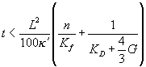
With
L = characteristic
length (layer thickness)
k´ = modified permeability (=k´/mf)
Kf=
fluid bulk modulus
In GEOMEC an undrained material model is implemented which is able to describe the following undrained effects:
The total stress formulation is the numerical method available in GEOMEC to simulate undrained behaviour in a time independent analysis. Here the pore pressure is not modelled explicity, but can be deduced at post-processing time. So the behaviour described by this model is poro-elasticity.
This model can be used not only in combination with the linear analysis option, but also in combination with the non-linear option, when other layers in the model have a non-linear material behaviour. But the formulation of the model forbids to combine it with a plastic model in a formation.
This material model is only available for non-reservoir layers, i.e. layers for wich the pore pressure distribution is defined constant over the depletion stages. GEOMEC will check that no pressure change is specified within undrained layers.
For the undrained
material model the following material parameters must be provided:
Note that in
Geomec the Biot a
effect is neglected. The stress decomposition is expressed as:
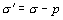
This corresponds to
the Terzaghi assumption where the intrinsic bulk modulus of the grains, Ks,
is assumed much larger than the drained bulk modulus, thus resulting in a Biot a:
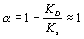
During material evaluation, three derived undrained material properties will be computed:
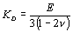
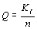
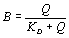
Then the undrained
elastic properties are deduced and input in the model:
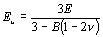
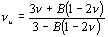
The pore pressure is set to zero in the model and the analysis is run in term of total stresses.
During post-processing, at every result point in the undrained material, the change in average total stress is calculated and the excess pore pressure is deduced:
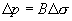
The following regular
Geomec output are then provided:
|
s |
|
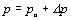 |
|
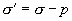 |